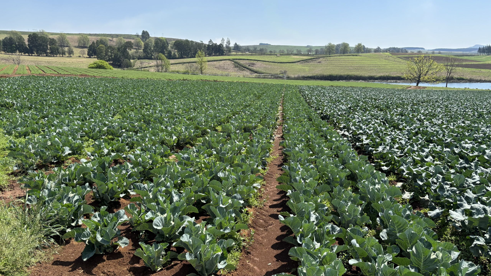
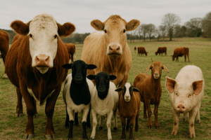
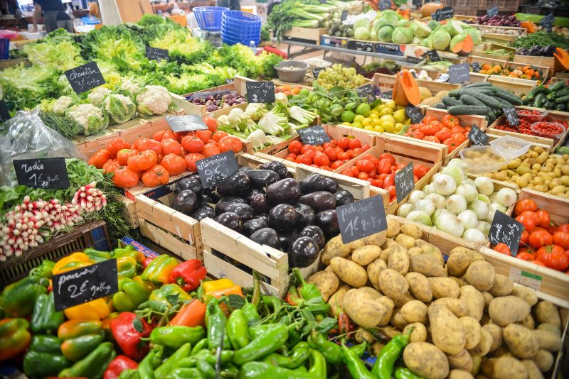
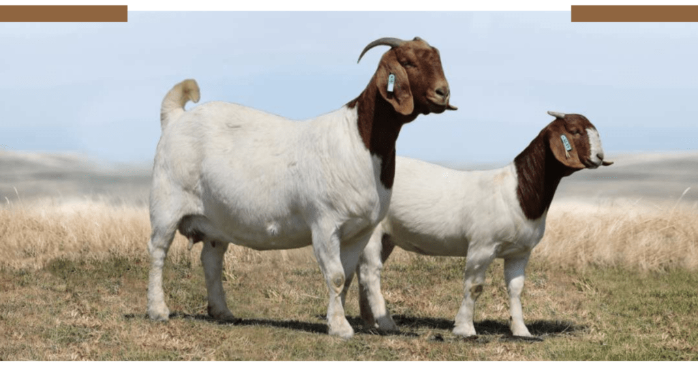

Growing Together.
Working Together.
Learning Together.
Saamtrek Saamwerk and Saamleer Farmers connects producers, markets, and communities through collaboration and opportunity.
About Us
We are a community-driven farmers association focused on empowering small and emerging farmers, promoting sustainable agriculture, and opening access to markets across South Africa.

From Field to Livestock
A visual glimpse into the farms, fields, and livestock that make up our growing agricultural community.

Open Farm Fields

Livestock

Fresh Produce
Gallery
Moments from farms, fields, livestock, and community activities.


What We Do
What We Do
🌱 Support emerging farmers
🌾 Promote sustainable agriculture
🤝 Create market access
📚 Encourage learning & collaboration
Weekly Farmers’ Listings
Fresh produce and livestock from our members.

A Trusted Farming Community
Saamtrek Saamwerk and Saamleer Farmers is built on collaboration, transparency, and shared growth. We bring together farmers from different regions to learn, work, and grow together.
50+
Active Members
5+
Provinces Represented
2024
Founded
100%
Community Driven
Why Join Saamtrek?
Saamtrek offers more than membership — it offers opportunity, learning, and collective growth.
Market Access
Reach buyers and communities beyond your local area.
Shared Knowledge
Learn from fellow farmers and agricultural partners.
Collective Strength
Grow stronger through unity, collaboration, and support.
Contact Us
Get in touch or join the association.
Important Contacts
Useful agricultural support contacts relevant to our members.
Department of Agriculture
Provincial offices for farmer support, grants, and training.
Veterinary & Animal Health Services
Disease control, livestock inspections, and vaccinations.
Strategic Partners
We collaborate with key institutions, government departments, and industry stakeholders to support farmers and strengthen agricultural value chains.
Departments of Agriculture
- • Free State
- • North West
- • Northern Cape
Auction Houses
Livestock and produce auction partners (to be listed).
Cooperatives & Koperasies
Regional cooperatives supporting farmers with inputs and market access.
Relevant Legislation
Farmers are encouraged to familiarise themselves with key legislation governing agricultural production, animal health, and food safety.
- Animal Health Act
- Meat Safety Act
- Agricultural Product Standards Act
- Land Reform & Agricultural Development policies